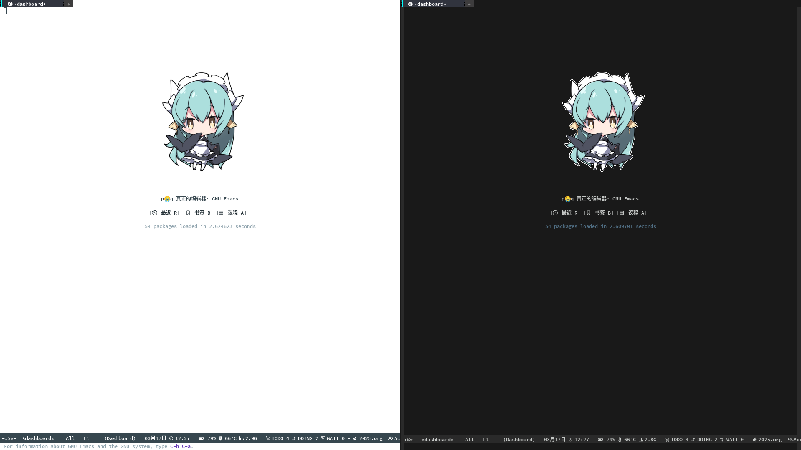
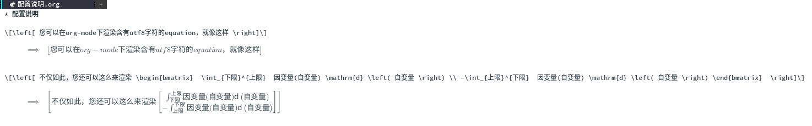
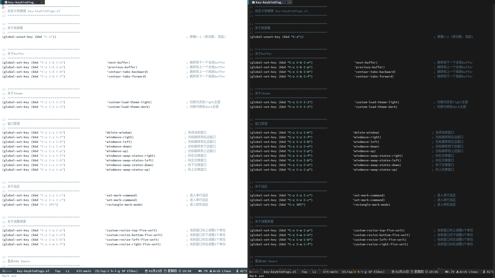

Table of Contents
1. 我自己这一生的编辑器只需要有GNU Emasc就足够了(20250123)
1.1. 特别感谢
感谢各位为爱付出的作者们，感谢FSF，感谢GNU，感谢RMS！
感谢大家！♥️
1.2. 使用效果
logo图片暂不提供，请见谅。
但您可以选择一张您喜欢的 矢量图 并通过如KolourPaint(KDE画图工具)等 绘图软件
在 1个主题对应1张图片 的前提下(共2张logo图片)设置两张logo图片的颜色
在这里 亮色主题 底色为 #FFFFFF
在这里 暗色主题 底色为 #191919
您可以使用绘图软件的 墨水桶 工具设置底色
另外，您也可以到 请支持GNU/FSF喵 下载您所需要的 矢量图
 (亮色主题background底色: #FFFFFF) (暗色主题background底色: #191919)
1.3. 亮点内容
在使用此配置下，您可以获得
在org-mode下，可以通过xetex引擎来渲染含有utf8的LaTeX代码

丰富的modeline(状态栏)信息全局显示
几乎不需要方向键↑↓←→并使用C-z作为前缀风格的组合快捷键

1.4. 安装方法
请您悉知
请先阅读 dotfiles.org 完成依赖安装
再请下载 dotfiles.org 并通过 GNU Emacs 打开，并执行 M-x org-babel-tangle 函数等待执行完毕，完成安装